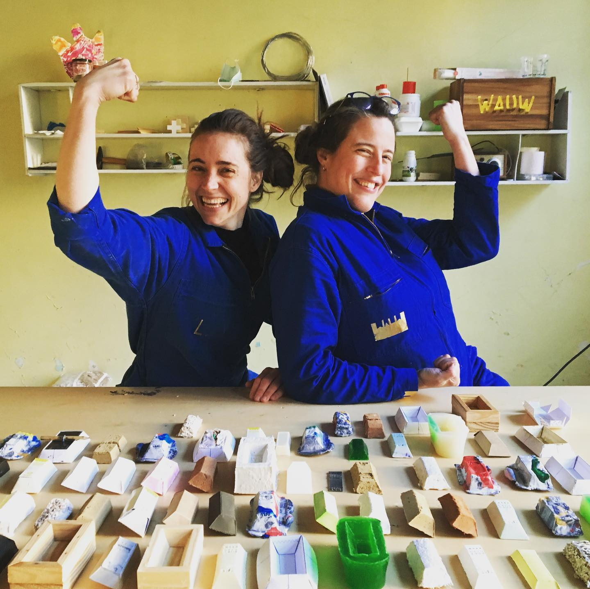

De WAUW ateliers zetten kinderen, jongeren en volwassenen aan om de wereld van de
architectuur en stedenbouw en design te
ontdekken. WAUW nodigt uit tot ontwerp en creatie. Het resultaat is niet alleen belangrijk,
wat we willen stimuleren is de analyse, het onderzoek, het testen van materialen en het
uiteindelijke bouwen. .
De WAUW ontwerpgidsen zijn professionele architecten en maquette bouwers die de passie en de
kriebel van het ontwerpen en het bouwen willen doorgeven.
WAUW is opgestart door Lotte & Stephanie .
Ze hebben het talent om out-of-the-box te denken en hun enthousiasme steekt iedereen aan om
samen te werken aan nieuwe ideeën.
Groeten,
WAUW